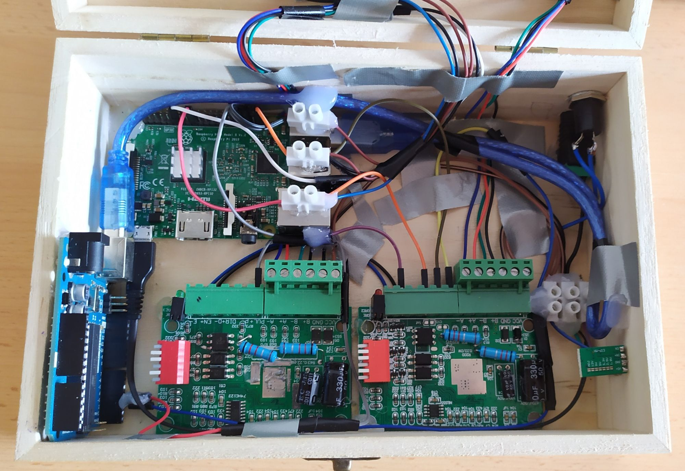

STEPPER MOTOR MUSIC
Contrôlé à distance et avec de fichiers MIDI.
Qu'est-ce que c'est?
J'ai eu l'opportunité de développer ce projet en tant que travail de recherche (Treball de Recerca) dans mon lycée, quand j'avais 16-17 ans. Donc, comme j'avais une date limite, je devais y travailler plus souvent.
L'idée de créer une machine Stepper Motor Music m'est venue à l'esprit quand j'ai vu une vidéo sur YouTube où 4 moteurs jouaient You've got a friend in me. Et j'ai pensé que ce serait interessant de pouvoir essayer le SMM par moi-même.
Nous l'appelons Stepper Motor Music parce que les sons sont produits par les vibrations d'un moteur (s'il tourne plus vite, la note est plus aigue; et s'il tourne plus lentement, la note est plus grave). Plus précisément, un moteur pas à pas vibre avec beaucoup plus d'intensité que le reste des moteurs. C'est pourquoi il est un bon candidat pour faire de la musique.
Pour faire tourner les deux moteurs, j'avais besoin de deux contrôleurs de moteur pas à pas (ou drivers), afin qu'ils puissent fonctionner avec 12V même si les autres composants électriques fonctionnaient avec 5V. Ces moteurs seraient contrôlés par une plaque Arduino, qui se comporterait comme un appareil MIDI lorsqu'il serait branché via USB sur une Raspberry Pi 3B. Ensuite, grâce à la Raspberry, certaines chansons pouvaient être sélectionnées via WiFi.
Tous ces composants seraient à l'intérieur d'une boîte en bois, de sorte que le son des moteurs soit un peu plus amplifié (le même fonctionnement que le bois dans une guitarre). Certains boutons et voyants d'état seront également ajoutés sur le dessus de la boîte, et une sortie jack d'alimentation sera préparée à l'arrière de la boîte. J'ai également utilisé un transformateur de 12V à 5V afin d'obtenir 5V pour alimenter l'Arduino et le Raspberry Pi avec une seule prise 12V (qui sera également utilisée pour les moteurs).
Le bouton sur le dessus de la boîte a été conçu pour bloquer les moteurs, afin qu'ils ne chauffent pas lorsqu'aucune musique n'est en cours de lecture. Un voyant indique si les moteurs sont bloqués ou pas.
Toutes ces idées ont été conçues et construites avec succès à l'intérieur de la boîte, sauf une: pouvoir jouer via WiFi. J'avais des problèmes avec certains programmes MIDI, et à l'époque je n'avais pas le courage de modifier les paramètres avancés des drivers.
Donc, pour résoudre ce problème, au lieu d'aller sur un site web, l'utilisateur se connecterait avec VNC dans la Raspberry PI, où à l'intérieur, une application serait toujours ouverte, et elle fonctionnerait comme une petite interface graphique. Une solution simple (et pas très élégante), mais qui fonctionnait plutôt bien.
Électronique à l'intérieur de la boîte.
Situation actuelle
Le projet a été présenté à l'école, avec toute la documentation utilisée et une petite démonstration (deux chansons). J'ai eu un 10 sur 10, ce qui signifie qu'apprendre des choses et avoir de bons résultats est très compatible!
Le modèle est maintenant dans ma chambre, et parfois je joue une ou deux chansons pour me souvenir de ce que j'ai fait.
Comme pour la plupart de mes projets, vous pouvez consulter le code et d'autres fichiers importants dans le repositoire de GitHub. Et si vous souhaitez consulter les fichiers pdf du projet et la présentation, vous pouvez aller à tiny.cc/StepperMotorMusic, où vous trouverez une vidéo-démonstration avec la chanson Africa, de Toto (tous les documentrs sont en Français).
Améliorations futures
Tout ce qui n'a pas pu être fait à cause de la date limite (plus de stabilité dans la connexion WiFi, une interface graphique, une option de playlist ...) pourrait être fait un jour. Mais, je pense que je ne vais plus toucher à ce projet.
Autres Projets